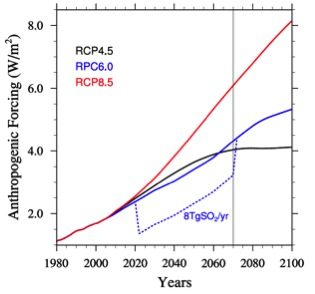

Experiment G4SSA is GeoMIP's contribution to the Chemistry Climate Model Initiative (CCMI) to understand the implications of chemistry and aerosol microphysics on the climate effects of stratospheric sulfate aerosol injection. The experiment is described in detail by Tilmes et al. (2015). G4SSA is also proposed as a lower tier experiment in GeoMIP6 to be performed by Earth System Models.
|

| |
Data for G4SSA can be found here via the Earth System Grid.